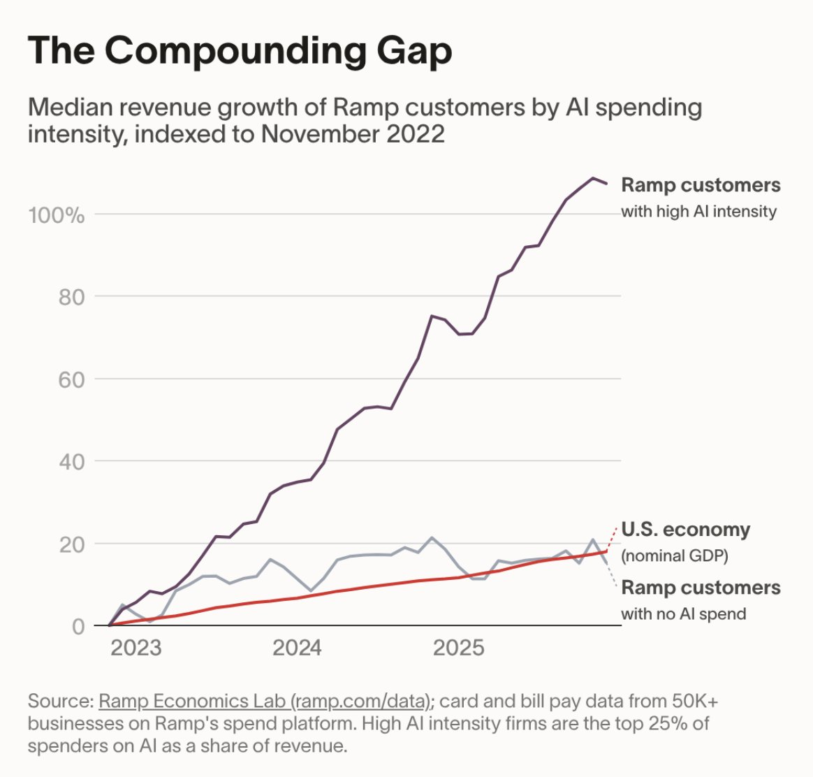
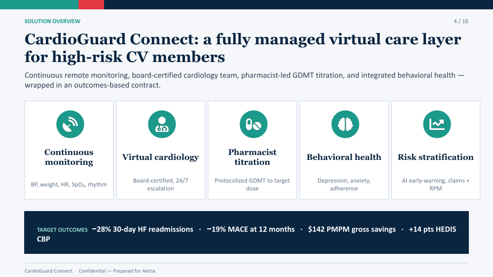
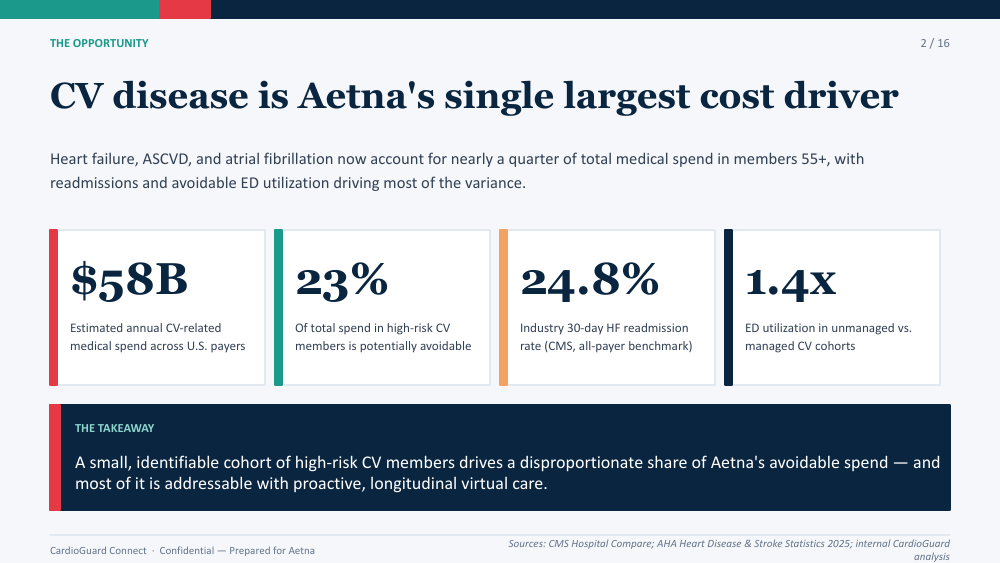
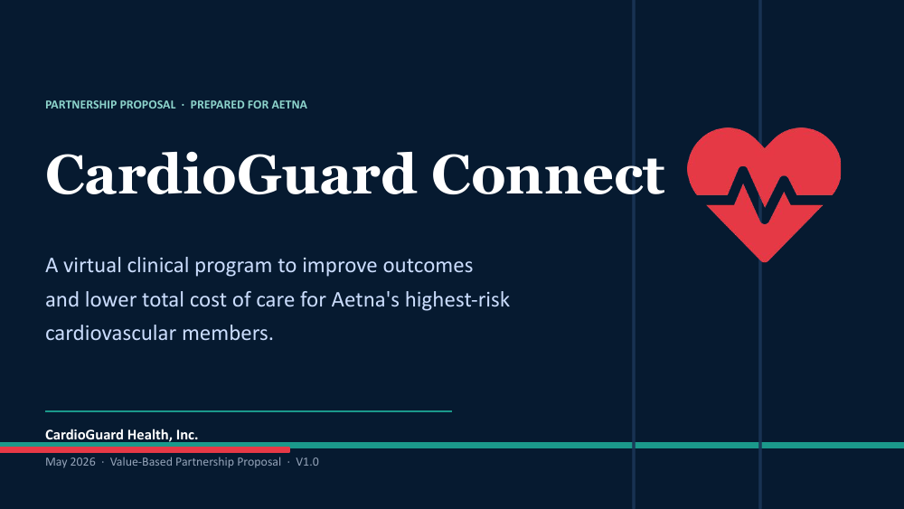
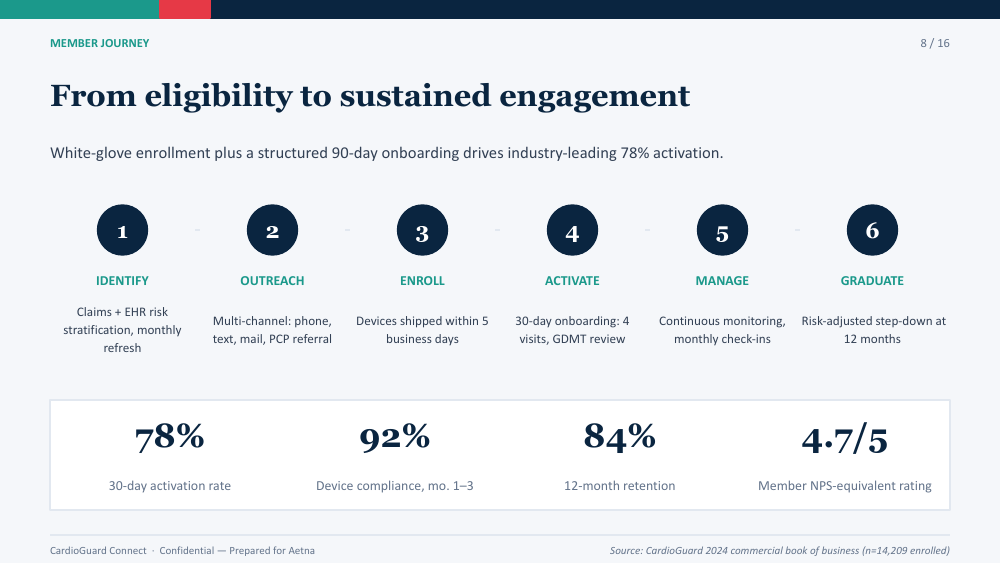
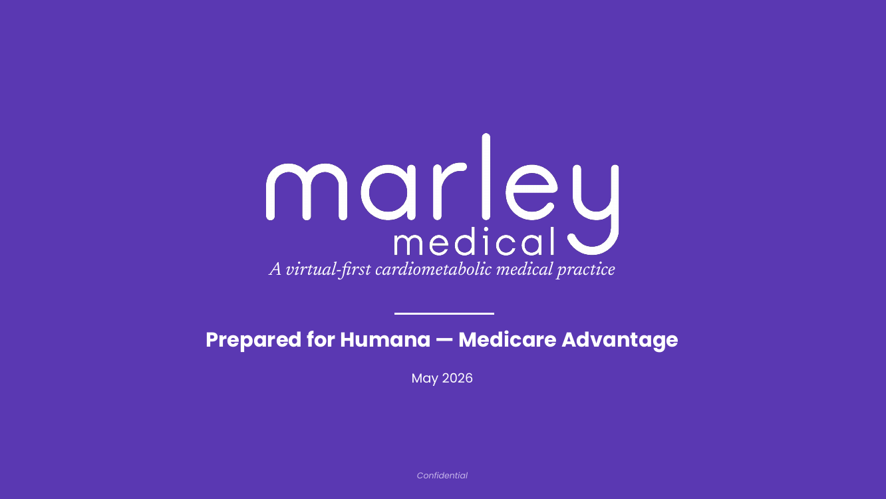
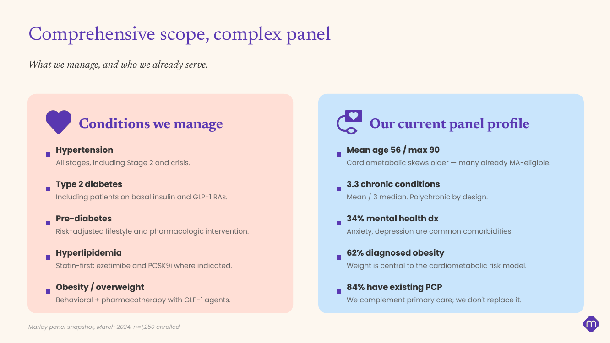
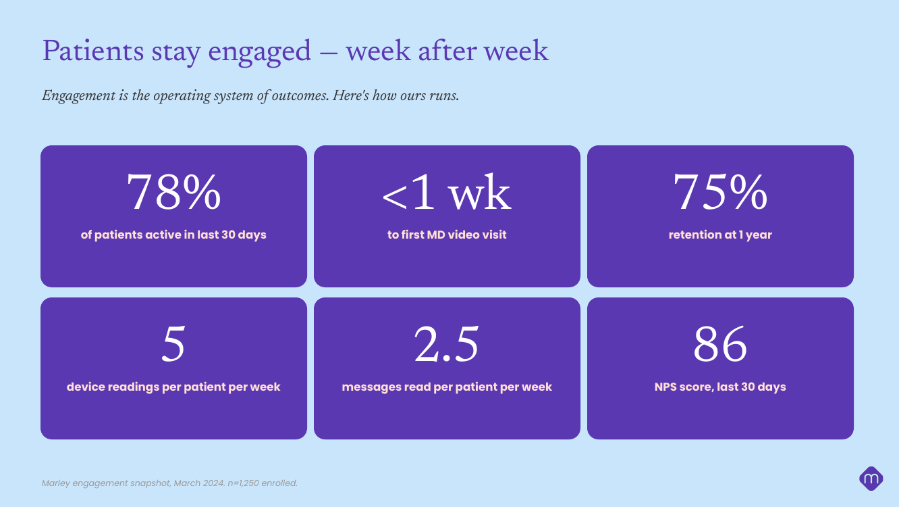
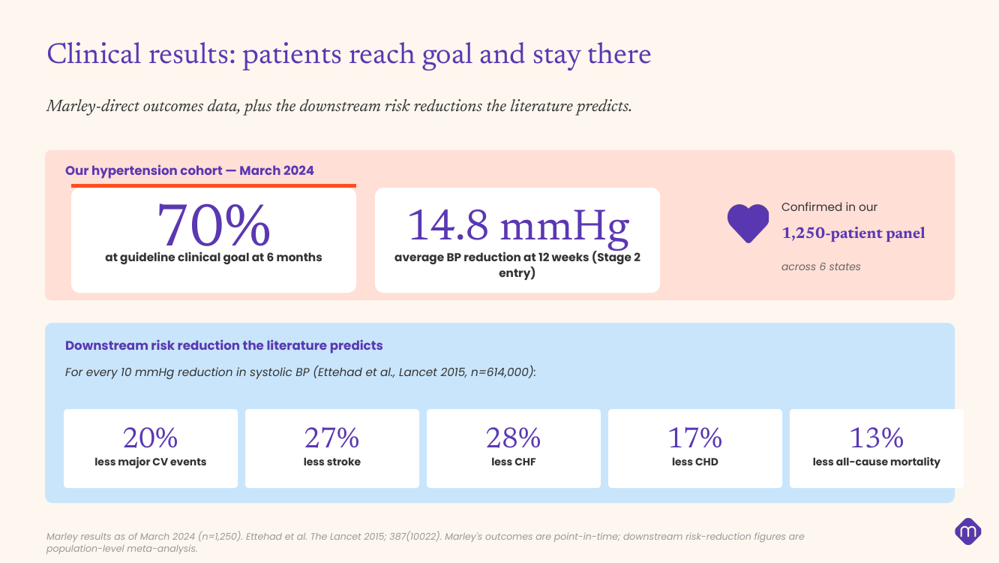

Helping you move from GenericAI to GenAI
Speed of learning is the key factor to success for startups — and the effective use of GenAI can make almost every process and task faster.
Your company is not going to get beat by AI (yet). But it will get beat by a competitor using GenAI everyday to improve productivity and iteration speed.




Skills are self-contained packages (knowledge, principles, prompts, brand assets) that we build and iterate inside your Claude Code, then deploy directly into your Claude Chat. Everything stays local — no MCP server, no external infrastructure.
A Skill is a folder. Everything Claude needs to build a deck the Marley way travels together — instructions, voice rules, the brand system, and the actual asset files.
SKILL.md defines steps. narrative-arc.md sets the 3-act story every Marley payer deck follows. evidence-conventions.md sets rules for citing clinical and economic claims.Same employee, same ask — but with company-specific Skills loaded into Claude Chat, the output knows your brand, voice and context.





Everything runs locally — we build and iterate Skills in your Claude Code, then deploy them into your Claude Chat. After the test period we keep learning and expanding the Skills library.
We start with a working session with your leadership team. The goal is alignment on how Skills will work, what's in scope, and which use cases to ship first.
For each use case identified in Step 1, we collect the source material that defines how your company already does that work. This is the input that makes each Skill specific to you.
We work inside your Claude Code instance to turn your documents into Skills. Each Skill is a single self-contained bundle — knowledge, prompts, examples and the actual brand asset files all travel together.
Skills install directly into your Claude Chat as native files. No server to stand up, no MCP integration, no GitHub repo, no third-party hosting. Your team invokes a Skill the same way they'd start any chat.
A structured 2–4 week trial period with the cohort defined in Step 1. We watch real usage, gather feedback, and refine each Skill until output quality is consistently great — then we open it up to the rest of the company.
Optionally, we can monitor and report on AI usage across the company and highlight top use cases and areas for improvement
We get the leadership cohort live in about 4 weeks, run a structured test period, then open Skills up to the rest of the company. After launch we do QBRs every 3 months to expand the Skills library based on real usage.